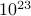
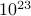
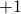
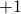
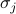

The Ising Model
The Ising model is a particular example of a thermodynamic system, and it's the model system for understanding phase transitions. You know how so many biologists spend so much time with measly fruit flies? Well, physicists spend a lot of time with the Ising model. As Prof. Raghu helpfully tells us, it's the Drosophila of phase transitions.
Personally, I'm not the biggest fan of his analogy because I think fruit flies are gross. Hopefully the Ising model won't be too gross.
Motivation
Why should we spend so much time talking about the Ising model?
It's surprisingly useful for helping us think about all sorts of behaviors relating to phase transitions. For instance:
the Ising model exhibits symmetry breaking in low-temperature phase (which we just talked about)
it has a special ‘critical point’ at a well-defined temperature (which we alluded to in the phase diagram of water)
other rich features.
It's one of few exactly solvable models where we can actually compute thermodynamic quantities and interpret them.
In general, calculating thermodynamic quantities is hard because you have to sum up many terms. Remember from our first thermo class that you can think about an equilibrium system as an ensemble of many states
 , each weighted with their own probability . In this framework, the thermodynamic quantities that you observe correspond to averages over the ensemble. In particular, if you want to find the ensemble average of some observable , you need to find the sum , where the sum runs over all the possible states. The problem with this, as you remember, is that the number of states of a thermodynamic system scales exponentially with the number of particles! Even for a moderate-sized system, there are just too many states for a computer to explicitly compute the average – let alone a thermodynamic system where
, each weighted with their own probability . In this framework, the thermodynamic quantities that you observe correspond to averages over the ensemble. In particular, if you want to find the ensemble average of some observable , you need to find the sum , where the sum runs over all the possible states. The problem with this, as you remember, is that the number of states of a thermodynamic system scales exponentially with the number of particles! Even for a moderate-sized system, there are just too many states for a computer to explicitly compute the average – let alone a thermodynamic system where  is on the order of .
is on the order of .So we need to ‘‘be clever’’ to compute the partition function, and we ought to be thankful for exactly solvable systems!
The Ising model is simple, yet it can be applied to a surprising number of different systems.
This our first taste of universality – a feature of critical phenomena where the same theory applies to all sorts of different phase transitions, whether in liquids and gases or magnets or superconductors or whatever. Physicists love this sort of general behavior because it suggests a sort of deeper order in our chaotic world.
Definition of Ising Model
The Ising Model is a mathematical model that doesn't correspond to an actual physical system. It's a huge (square) lattice of sites, where each site can be in one of two states. We label each site with an index  , and we call the two states
, and we call the two states  and . To say that the 'th site is in the state , we write .
and . To say that the 'th site is in the state , we write .

Now, this definition is woefully abstract and unphysical, so for us physicsits, it's extremely helpful to have an actual system in mind, so that we can refer to something explicit and build physical intuition. Here are a few physical systems that the Ising model might represent:
A magnet. Each site represents a particular ‘spin’ in the material (an unpaired electron??), and it's
if the spin points down or if the spin points up. Each of the spins acts like a mini magnet with its own mini magnetic moment; if all the spins are aligned, then the whole lattice of spins behaves like a big magnet with a net macroscopic magnetic moment.An alloy; say, brass. Each of the sites is an atom in the lattice;
represents an copper atom at that site; represents zinc.A ‘‘lattice gas’’. Each of the sites is the possible location of a particle;
means that site is empty and means that site is occupied by a particle.
For now, we'll think of the Ising model as a model for a magnet. It's a grossly simplified and toy model of a magnet, for sure, but the magnet analogy can nonetheless help guide our cherished physical intuition.
Putting together the Hamiltonian
A natural question to ask about this Mickey-mouse model of a magnet is what energy it has. To be more precise, we want to write down a function that represents the energy of every single possible configuration (a.k.a. microstate) of the spins in the magnet. As we know, this energy function is called the Hamiltonian.
In the Ising model, the Hamiltonian includes two types of interactions:
the external field term. As we remember from quantum mechanics, an external magnetic field
 can split the energies of the spin-down and spin-up state, so that one is higher in energy and the other is lower.
can split the energies of the spin-down and spin-up state, so that one is higher in energy and the other is lower.The size of
represents how strong the field is, so it tells you how much higher in energy one spin is than the other.The sign of
tells you whether it's spin up or spin down that's preferred.Since every individual spin feels the external field, we have to sum over all sites to find total contribution to the energy.
the interaction term between neighboring spins – maybe they want to align with each other and point the same way, maybe they want to anti-align and point in different ways. Physically, we can imagine that this interaction arises because each spin in the magnet is its own mini magnetic dipole that sets up its own magnetic field, and its neighbors can feel that magnetic field.
The size of
 tells you how strongly neighboring spins are coupled to each other – how much they want to (anti-)align. Physically, the strength of spin-spin coupling could depend on distance between them in the maget's lattic, for instance.
tells you how strongly neighboring spins are coupled to each other – how much they want to (anti-)align. Physically, the strength of spin-spin coupling could depend on distance between them in the maget's lattic, for instance.The sign of
tells you whether neighbors prefer to align or to anti-align. (The technical term for this is ferromagnetic or anti-ferromagnetic, respectively). Physically, whether a material is one or the other (or neither) depends on the exact quantum mechanical details of how the spins interact.Since the spin-spin interaction arises between two spins, we have to sum over pairs of sites to find its total interaction to the energy.
More about the interaction term
A natural question about the spin-spin interaction term is which spins are coupled to which spins?
If we turn back again to the physical picture of the magnet, and we zoom in on some particular spin, we would expect strength of the spin-spin interaction to be stronger for nearby spins and weaker for faraway spins. The exact distance-dependence of spin-spin interactions is likely rather complicated for actual magnets.
For the Ising model, we make the simplest possible assumption for the nature of this spin-spin interaction:
In the Ising model, each lattice site only interacts with the sites directly adjacent to it on the lattice.
A few comments:
In a square lattice of
 dimensions, each site has nearest neighbors: left and right in one dimension, up and down once you add the second dimension, etc…
dimensions, each site has nearest neighbors: left and right in one dimension, up and down once you add the second dimension, etc…We assume the interaction is isotropic – all neighbors are treated equally regardless of direction.
We often talk about nearest-neighbor interactions as the energy of a bond that joins two lattice sites.
When we're summing over adjacent pairs of sites, symbolically, we write little angle brackets around the indices to represent ‘‘nearest neighbor’’.
A nice consequence of nearest-neighbor interactions is that when we're finding the total energy of some configuration of spins, rather than summing over all possible pairs of sites, we only sum over pairs of sites that are adjacent to each other.
Of course, in more complicated or more realistic models, we might relax some of these assumptions and allow for longer-range interactions or non-isotropic interactions, but for now, this is the simplest possible interaction that we can think of, and we ought to cherish it and see what it can teach us!
Now that we've discussed all these things, we're ready to write down the actual expression for the Hamiltonian. (I wanted to explain and interpret the physics before writing down the Hamiltonian so that the symbols made some sort of sense.)
Hamiltonian of the Ising Model
The Hamiltonian of the Ising Model can be written as
where reprents the spin-spin interaction, represents the external field, and the  are the individual spins on each of the lattice sites. The first sum is over all pairs of neighboring lattice sites (a.k.a. bonds); it represents the interactions between spins. The second sum is over all the lattice sites themselves; it represents the external field trying to align all the spins in one direction.
Continue on to the thermodynamics of the Ising model.